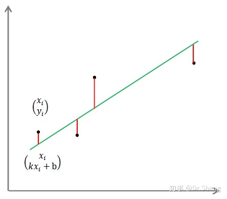
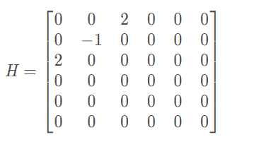
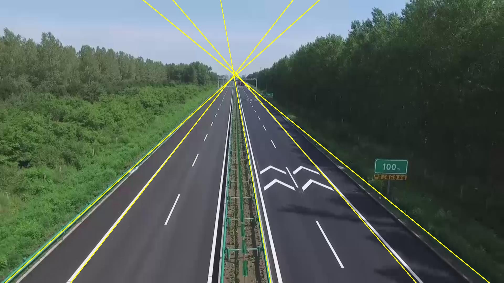
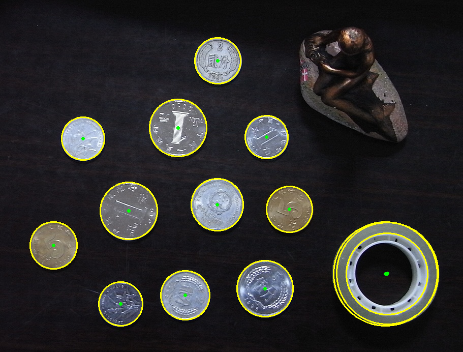

使用opencv来实现圆与直线的检测(不依赖opencv库中自带函数)
实验目的和要求
对输入的一张彩色图像，检测其中的圆形与直线，并将检测结果显示在原图上。
opencv实现以下功能：
- 检测算法的核心功能需要自己写代码实现，不能调用OpenCV或其他SDK里与圆形/直线检测相关的函数;如果要用到边缘检测，这个可以调用OpenCV函数。
- 在原图上显示最终的检测结果;
- 单独显示一些关键的中间结果;
- 必须对指定的三张测试图像(coin、seal、highway)调试结果。此外，自己还可以自愿加一些测试图像
实验原理
在具体实现过程中，我们有两个部分，一个是直线的检测，一个是圆形的检测。
在直线、圆形的检测过程中，我们采用最小二乘法图像拟合来进行本次实验。圆和直线的处理方式是共通的，大致上可以分为：
图片载入
图像滤波除去干扰杂点和噪点
使用canny算子对图形进行边缘提取
图像形态学进行开闭操作加强边缘
提取边缘成为点集合
根据点集合拟合直线，并排除分布不符合条件的点集
输出结果
Canny算子进行边缘提取
canny边缘检测实际上是一种一阶微分算子检测算法，它几乎是边缘检测算子中最为常用的一种。
Canny边缘检测主要分四步进行：
- 去噪声；
- 计算梯度与方向角；
- 非最大值抑制；
- 滞后阈值化；
其中前两步先用一个高斯滤波器对图像进行滤波，然后用Sobel水平和竖直检测子与图像卷积，来计算梯度和方向角。
轮廓提取
通过Canny算子提取边缘后，我们可以通过使用Opencv中的findContours函数，检测出物体的轮廓并储存在点集合中。
最小二乘法拟合
最小二乘法（least squares method），又称最小平方法，是一种数学优化建模方法。它通过最小化误差的平方和寻找数据的最佳函数匹配。
利用最小二乘法可以简便的求得未知的数据，并使得求得的数据与实际数据之间误差的平方和为最小。
直线拟合原理
假设有点 $ i = 1,2,3,……n$ ,求近似曲线 $y=φ(x)$ ，并且使得$y=φ(x)$与$y=f(x)$的平方偏差和最小。
我们将偏差定义为：

现在有点$(x_1,y_1),(x_2,y_2),…(x_n,y_n),$设拟合多项式为：$y=ax+b$,则平方偏差和如下：
带入直线公式即：
我们需要找到最好一组$a,b$，使得$e^2$的值最小，所以以上函数是一个关于$a,b$的函数。最小二乘法对各个变量求偏导，使得偏导值为0，即可得到最小值，因为e是关于a b的函数，导数为0的点必定是最小值，分别对 a b求偏导可以得到：
得到等式 和 $(\sum_{i=1}^nx_i)a+nb=\sum_{i=1}^ny_i$。将方程组连立后转为矩阵得
关于此矩阵的求解，我们使用opencv自带的solve函数来解决。
椭圆拟合原理
对于椭圆的拟合，我们使用最小二乘算法构造方程，使用拉格朗日乘子进行求解。
椭圆一般方程为：
对于其中每个点，我们：
令$W=[A,B,C,D,E]^T,X=[x^2,xy,y^2,x,y]^T$，方程可以表达为$WX=1$。拟合椭圆最优化问题可以表示为：
其中常数矩阵为

$s.t. W^THW>0$是椭圆参数约束$4AC-B^2>0$。
此时利用opencv的solve函数，使用高斯消元法就可以得到结果。
排除干扰点
在拟合图形后，我们需要排除干扰点。这是因为部分点或许是离散的，但是拟合函数却能让他们形成我们想要的形状。如图fig1。点是离散的，虽然这个点集合也可以进行直线拟合，但是很明显其本身不是直线，是我们需要剔除的数据。
实验环境
- vs 2017
- opencv-4.5.0
- C++
实验具体实现
基本处理
对于输入的图片，我们首先进行基本的处理，即提取边缘和轮廓。
边缘提取
1 | void cvCanny( InputArray image,OutputArray edges, |
- image 输入图像，这个必须是单通道的，即灰度图
- edges 输出的边缘图像 ，也是单通道的，但是是黑白的
- threshold1 第一个阈值
- threshold2 第二个阈值
- aperture_size Sobel 算子内核大小
- L2gradient是否采用更精确的方式计算图像梯度
关于两个阈值参数：
- 低于阈值1的像素点会被认为不是边缘；
- 高于阈值2的像素点会被认为是边缘；
- 在阈值1和阈值2之间的像素点,若与第2步得到的边缘像素点相邻，则被认为是边缘，否则被认为不是边缘。
轮廓提取
轮廓提取主要使用opencv自带函数findContours来实现。具体参数如下：
1 | findContours( InputOutputArray image, OutputArrayOfArrays contours, |
第一个参数：image，单通道图像矩阵，可以是灰度图，但更常用的是二值图像，一般是经过Canny、拉普拉斯等边缘检测算子处理过的二值图像；
第二个参数：contours，定义为vector
第三个参数：hierarchy，定义为“vector
第四个参数：int型的mode，定义轮廓的检索模式：
- 取值一：CV_RETR_EXTERNAL只检测最外围轮廓，包含在外围轮廓内的内围轮廓被忽略
- 取值二：CV_RETR_LIST 检测所有的轮廓，包括内围、外围轮廓，但是检测到的轮廓不建立等级关系，彼此之间独立，没有等级关系，这就意味着这个检索模式下不存在父轮廓或内嵌轮廓，所以hierarchy向量内所有元素的第3、第4个分量都会被置为-1。
- 取值三：CV_RETR_CCOMP 检测所有的轮廓，但所有轮廓只建立两个等级关系，外围为顶层，若外围内的内围轮廓还包含了其他的轮廓信息，则内围内的所有轮廓均归属于顶层。
- 取值四：CV_RETR_TREE， 检测所有轮廓，所有轮廓建立一个等级树结构。外层轮廓包含内层轮廓，内层轮廓还可以继续包含内嵌轮廓。
第五个参数：int型的method，定义轮廓的近似方法：
- 取值一：CV_CHAIN_APPROX_NONE 保存物体边界上所有连续的轮廓点到contours向量内。
- 取值二：CV_CHAIN_APPROX_SIMPLE 仅保存轮廓的拐点信息，把所有轮廓拐点处的点保存入contours向量内，拐点与拐点之间直线段上的信息点不予保留。
- 取值三和四：CV_CHAIN_APPROX_TC89_L1，CV_CHAIN_APPROX_TC89_KCOS使用teh-Chinl chain 近似算法。
第六个参数：Point偏移量，所有的轮廓信息相对于原始图像对应点的偏移量，相当于在每一个检测出的轮廓点上加上该偏移量，并且Point还可以是负值。
直线检测
1 | vector<Point> myfitline(Size size,vector<Point>points){ |
solve函数
1 | bool cv::solve(InputArray src1, |
src1 线性系统的左侧（相当于上面的A），src2 线性系统的右侧（相当于上面的B），dst 输出的解决方案（相当于要求解的X）,flag为使用的方法。
排除干扰点
根据slove函数拟合出的直线中，有很大一部分其实为干扰直线。如果不将这些直线去除，我们的检测结果会很糟糕。
针对检测结果，我们提出以下几个过滤条件：
轮廓周长低于或者点个数小于20的去除
1
2
3
4
5
6
7if (contours[i].size() < 20)continue;
double c = arcLength(points, true); //轮廓周长
if (c <= 100.0) {
vector<Point>lines;
return lines;
}计算每个点和直线的平均距离方差，如果方差过大则剔除。如果只有不到90%的点距离直线比较近，则也进行剔除。
1
2
3
4
5
6
7
8
9
10
11
12
13
14
15int k = points.size() - 1;
int ori = k + 1;
while(k >=0) {
double e = 0;
double y0 = X.at<double>(0, 0) + X.at<double>(1, 0)*points[k].x;
e = pow(points[k].y - y0, 2);
if (e > 100) points.pop_back();
k--;
}
int now = points.size();
double f = points.size()*1.0/ori;
if (f<0.9||points.size()<100) {
vector<Point> noResult;
return noResult;
}
生成直线
经过排除干扰直线后，就可以生成得到的所有直线，此处使用polyline函数实现。
1 | vector<Point> rect =myfitline(size,contours[i]); //拟合 |
圆检测
1 | vector<double> getEllipseparGauss(vector<Point> vec_point){ |
高斯消元法：
1 |
|
去除干扰点
针对检测结果，我们提出以下几个过滤条件：
- 去掉过小和过大圆
1 | if (!(MinR < radius && radius < MaxR)) { |
- 因为我们运用的是拟合椭圆的条件，因此需要在里面找到圆
1 | float ratio = float(rect[3]) / float(rect[2]); |
- 根据以上条件拟合出来的圆存在一个问题，即如果是正方矩形，也符合以上条件。因此需要添加新条件排除此种可能。
1 | bool ComputeVariance(vector<Point> theContour, Point2f theCenter) { |
实验结果分析
通过调整各个参数，可以获得结果如下：
直线检测

圆形检测
